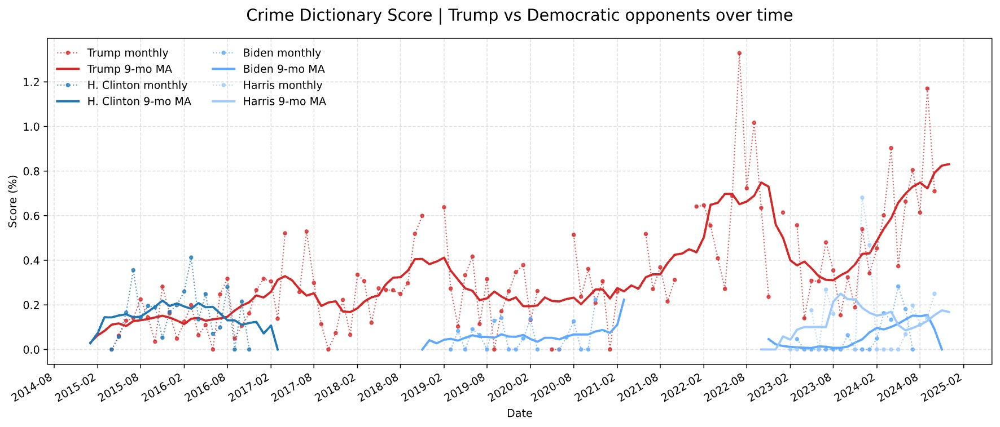
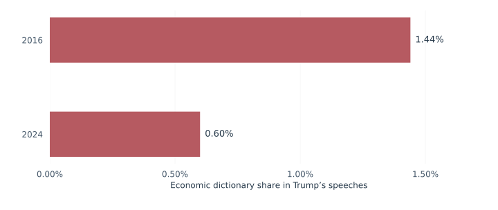
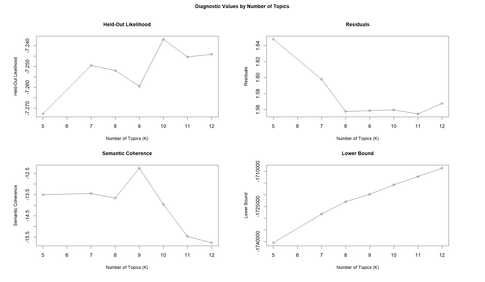
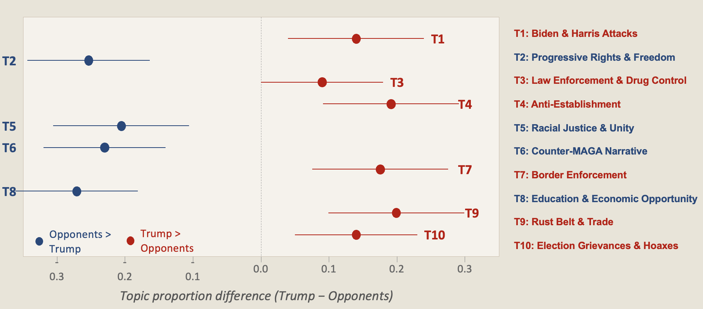
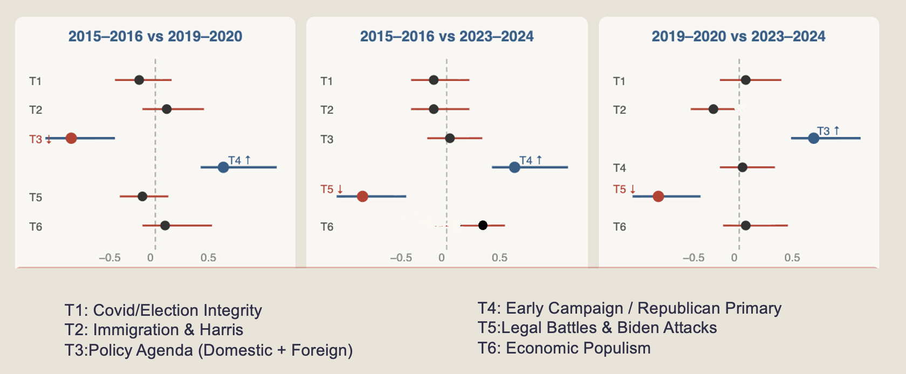
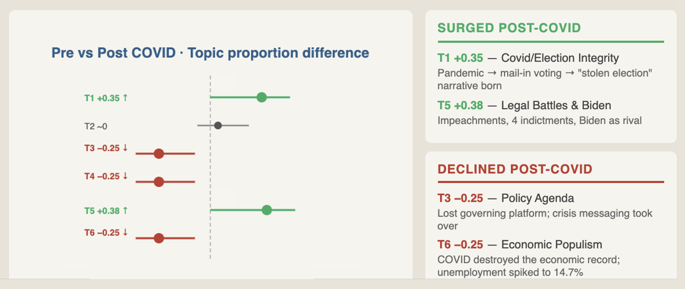

Thematic Divides in Trump-Era Campaign Rhetoric
Candidates, Election Cycles, and Historical Change
Campaign speeches combine policy, identity, and conflict in changing proportions. This project uses dictionaries and structural topic models to compare Trump with his Democratic opponents and to examine how the thematic composition of his speeches changes across three election cycles.
From selected words to recurring themes
A word dictionary measures how often a speech mentions crime or economic issues. A topic model asks how words combine into recurring themes. This project uses both to compare Trump with Democratic opponents, follow his rhetoric across election cycles, and examine differences before and after March 2020.
The substantive interest is in how campaign language organizes policy, collective identity, and blame. A rise in crime vocabulary alone cannot show which other concerns surround it. Combining dictionary measures with topic mixtures makes it possible to distinguish the frequency of selected concepts from the broader thematic settings in which candidates discuss them.
Research on populist communication treats political appeals as a combination of content and style: people-centered claims, antagonism, and the construction of political boundaries (de Vreese et al., 2018). Campaign research also places identity conflict alongside policy positioning (Sides et al., 2018). These perspectives motivate asking which concerns occur together in speeches. A count of individual categories can locate vocabulary, while thematic mixtures help describe how candidates organize those concerns into broader narratives.
Four candidates across three campaign periods
The corpus contains 177 full-text U.S. presidential campaign speeches from 2015–2024 by Donald Trump, Hillary Clinton, Joe Biden, and Kamala Harris. The analytical unit is an individual speech, allowing each document to contain several themes. The selected periods are 2015–2016, 2019–2020, and 2023–2024: Trump appears across all three, while the opposing candidate changes. This structure supports both candidate contrasts and comparisons within Trump’s campaigns.
Lexical measures use selected dictionaries associated with Savin and Treisman’s Donald Trump’s Words replication materials, including crime, economy, public services, elite language, and pronouns. The full candidate corpus supports the cross-candidate model; separate Trump-only subsets support the cycle and historical-period models.
The two comparisons have different scopes. Pooling Clinton, Biden, and Harris gives a broad contrast with the Democratic speeches in the collection, while the Trump-only models hold the speaker constant across periods. The latter still compare changing campaign circumstances. Neither design represents all Republican rhetoric or a balanced comparison of every candidate in every election.
More crime language, less economic vocabulary
The lexical series places the thematic comparisons in context. Trump’s crime-related vocabulary increases across the campaign periods, while his economic vocabulary declines. These are shares of words assigned to dictionary categories, rather than measures of policy detail or the tone in which an issue is discussed.

View full-size figure
{kind=link}

View full-size figure
{kind=link}
The economic dictionary result for Trump declines from 1.44% in 2016 to 0.60% in 2024. The comparison adds perspective to the crime series: increased attention to one set of terms accompanies reduced attention to another. This describes a smaller lexical share, not the absence of economic arguments, and the downward pattern also appears among the changing Democratic opponents.
Modeling thematic mixtures
Rather than defining every rhetorical category in advance, Structural Topic Modeling treats each speech as a mixture of latent topics and estimates how topic prevalence varies with document-level characteristics (Roberts et al., 2014, 2019). Each topic is a distribution over words, and a single speech can combine several topics. This complements dictionary analysis: dictionaries begin with predefined lexical categories, whereas STM identifies recurring combinations without requiring every substantive theme to be specified beforehand.
Structural topic models relate document characteristics to the share of a speech associated with a topic. The candidate comparison uses ten topics and a binary Trump-versus-pooled-opponents covariate. Two separate Trump-only models use six topics for election cycle and pre-/post-March 2020. Diagnostics and substantive interpretability inform topic-number selection.
Topic labels summarize characteristic vocabulary. Their numbers belong to each fitted model and cannot automatically be matched across models.
Held-out likelihood and convergence diagnostics help assess the topic solutions; the Trump-only searches consider four through twelve topics. A selected number of topics is a useful analytical resolution, not proof that political discourse contains exactly that many themes. Reading characteristic words alongside campaign context is necessary because a statistical grouping does not assign its own substantive meaning.
Model 1 — Candidate comparison. All 177 speeches by Trump, Clinton, Biden, and Harris enter the model. The prevalence covariate contrasts Trump with the pooled Democratic opponents, with K = 10 topics. This specification estimates the broad candidate contrast within the collected speeches.
Model 2 — Election-cycle comparison. A Trump-only corpus is compared across 2015–2016, 2019–2020, and 2023–2024, using election cycle as the prevalence covariate. The selected resolution is K = 6.
Model 3 — Historical split at March 2020. A separate Trump-only model uses a before-versus-after-March-2020 covariate and K = 6. It describes a historical contrast, without isolating a pandemic effect.

View full-size figure
{kind=link}
The diagnostics evaluate different aspects of a solution. Held-out likelihood concerns prediction of withheld words; residuals indicate remaining lack of fit; semantic coherence concerns the co-occurrence of characteristic words; and the variational lower bound tracks the fitted approximation. These criteria can favor different resolutions. Interpretability and contextual validation remain necessary, as emphasized in the text-as-data literature (Grimmer & Stewart, 2013).
Topic numbers are model-specific identifiers rather than fixed substantive categories. Labels are assigned after examining characteristic words and campaign context. The following overview describes the ten-topic candidate-comparison model.
| Topic and interpretive label | Characteristic words |
|---|---|
| T1 — Biden & Harris Attacks | indict · joe · harris · kamala · migrant · biden · rig · terrorist |
| T2 — Progressive Rights & Freedom | freedom · body · senior · decision · openly · cap · issue · highspeed |
| T3 — Law Enforcement & Drug Control | hampshire · penalty · trial · drug · police · steve · immediately · dealer |
| T4 — Anti-Establishment | alabama · irag · hillary · vet · nice · politician · unbelievable · japan |
| T5 — Racial Justice & Unity | character · black · scranton · dignity · dad · division · choose · soul |
| T6 — Counter-MAGA Narrative | cancer · joke · delaware · guess · hyperbole · optimistic · buck · maga |
| T7 — Border Enforcement | ice · wisconsin · unemployment · ron · embassy · west · rick · open |
| T8 — Education & Economic Opportunity | college · teacher · student · ahead · wage · income · debt · equal |
| T9 — Rust Belt & Trade | michigan · nafta · clinton · citizen · regulation · medium · african · disaster |
| T10 — Election Grievances & Hoaxes | ballot · russia · hoax · georgia · texas · corrupt · soldier · afghanistan |
Different emphases within the campaign setting
Trump’s speeches give greater estimated emphasis to border enforcement, anti-elite appeals, law enforcement, trade, personal attacks, and election grievances. Opponent speeches emphasize rights, racial justice, education and opportunity, and responses to MAGA rhetoric.

View full-size figure
{kind=link}
These are relative emphases. Mixed-topic speeches and shared vocabulary mean that neither side is restricted to one set of subjects.
The zero line is the key reference in the candidate plot. An interval extending clearly to one side indicates a more distinct estimated difference than an interval near or across zero. Several labels combine policy with conflict—for example, trade and border enforcement—so the pattern should not be read as a clean separation between candidates who discuss policy and candidates who do not.
A changing campaign agenda
The cycle comparison distinguishes early primary rivalry and economic-populist language from governing themes in 2019–2020 and greater attention to legal disputes, Biden, Harris, and immigration in 2023–2024.

View full-size figure
{kind=link}
The separate March 2020 comparison shows greater post-period prominence for pandemic/election and legal-conflict themes, alongside less emphasis on the earlier policy and primary agenda.

View full-size figure
{kind=link}
The cycle contrasts give a more differentiated account than a single before-and-after label. Early primary references become less prominent as opponents and campaign roles change, while later speeches feature different disputes and targets. The March 2020 split summarizes another historical contrast in this same evolving setting; it does not separate the pandemic from the other changes unfolding across campaigns.
Describing rhetorical organization
Dictionary trends and topic models reveal different layers of rhetorical change: the frequency of selected concepts and the recurring combinations in which they appear. Together they describe a movement toward conflict-centered themes within the analyzed speeches.
The corpus covers four candidates and three cycles. Topic labels and preprocessing choices shape the result, and historical contrasts do not identify causal effects or voter persuasion. Validation across additional speeches and alternative topic solutions would test how widely these patterns hold.
References
de Vreese, C. H., Esser, F., Aalberg, T., Reinemann, C., & Stanyer, J. (2018). Populism as an expression of political communication content and style: A new perspective. The International Journal of Press/Politics, 23(4), 423–438.
Grimmer, J., & Stewart, B. M. (2013). Text as data: The promise and pitfalls of automatic content analysis methods for political texts. Political Analysis, 21(3), 267–297.
Roberts, M. E., Stewart, B. M., & Tingley, D. (2019). stm: An R package for structural topic models. Journal of Statistical Software, 91(2), 1–40.
Roberts, M. E., Stewart, B. M., Tingley, D., Lucas, C., Leder-Luis, J., Gadarian, S. K., Albertson, B., & Rand, D. G. (2014). Structural topic models for open-ended survey responses. American Journal of Political Science, 58(4), 1064–1082.
Sides, J., Tesler, M., & Vavreck, L. (2018). Identity crisis: The 2016 presidential campaign and the battle for the meaning of America. Princeton University Press.